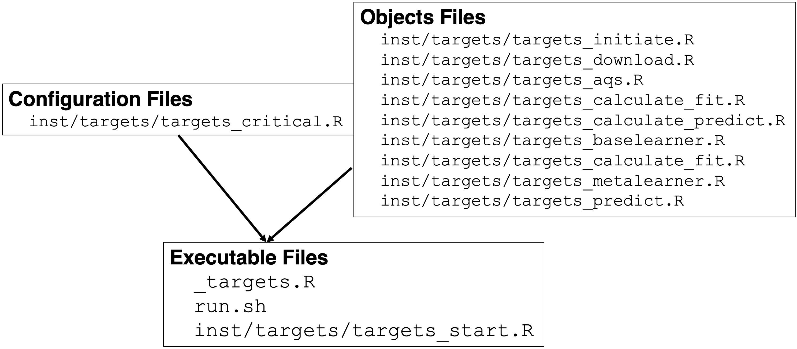

Building an Extensible, rEproducible, Test-driven, Harmonized, Open-source, Versioned, ENsemble model for air quality 


Group Project for the Spatiotemporal Exposures and Toxicology group with help from friends 😃 🤠 🌎
Installation
remotes::install_github("NIEHS/beethoven")Workflow
beethoven is a targets reproducible analysis pipeline with the following workflow.
graph TD
subgraph AQS data with `amadeus`
AQS[PM2.5 download]-->AQS2[PM2.5 Process]
end
AQS2 --> Cov1
AQS2 --> Cov2
AQS2 --> Cov3
AQS2 --> Cov4
subgraph Covariate Calculation with `amadeus`
Cov1[Meterology]
Cov2[NLCD]
Cov3[...]
Cov4[MERRA2]
end
subgraph Processed Covariates
PC[Baselearner Input]
end
Cov1 --> PC
Cov2 --> PC
Cov3 --> PC
Cov4 --> PC
PC --> A1
PC --> A2
PC --> A3
subgraph MLP Baselearner
A1[ M_i is a 30% random sample of N] --> B1A[Spatial CV]
A1[ M_i is a 30% random sample of N] --> B1B[Temporal CV]
A1[ M_i is a 30% random sample of N] --> B1C[Space/Time CV]
B1A --> C1[3. M_i is fit with a MLP model]
B1B --> C1
B1C --> C1
end
subgraph LightGBM Baselearner
A2[ M_i is a 30% random sample of N] --> B2A[Spatial CV]
A2[ M_i is a 30% random sample of N] --> B2B[Temporal CV]
A2[ M_i is a 30% random sample of N] --> B2C[Space/Time CV]
B2A --> C2[3. M_i is fit with a LightGBM model]
B2B --> C2
B2C --> C2
end
subgraph Elastic-Net Baselearner
A3[ M_i is a 30% random sample of N] --> B3A[Spatial CV]
A3[ M_i is a 30% random sample of N] --> B3B[Temporal CV]
A3[ M_i is a 30% random sample of N] --> B3C[Space/Time CV]
B3A --> C3[3. M_i is fit with a glmnet model]
B3B --> C3
B3C --> C3
end
C1 --> D1[Elastic-Net Meta-Learner]
C2 --> D1[Elastic-Net Meta-Learner]
C3 --> D1[Elastic-Net Meta-Learner]
subgraph Meta-Learner Phase
D1 --> E1[Perform 50% column-wise subsampling K times]
E1 --> E1b[Proper Scoring CRPS CV with 1 of 3 categories with equal probability, Spatial, Temporal, or Space/Time]
E1b --> M1[Elastic-Net Model 1]
E1b --> M2[Elastic-Net Model 2]
E1b --> M3[Elastic-Net Model 3]
E1b --> M4[Elastic-Net Model K-1]
E1b --> M5[Elastic-Net Model K]
end
subgraph Posterior Summary
M1 --> P1[Complete Posterior Summary at daily, 1-km]
M2 --> P1
M3 --> P1
M4 --> P1
M5 --> P1
P1 --> P5[Version and Deploy with Vetiver]
P1 --> P2[Spatial and Temporal Average Summaries]
P2 --> P5
end
style A1 fill:#d3d3d3,stroke:#000,stroke-width:2px
style B1A fill:#d3d3d3,stroke:#000,stroke-width:2px
style B1B fill:#d3d3d3,stroke:#000,stroke-width:2px
style B1C fill:#d3d3d3,stroke:#000,stroke-width:2px
style C1 fill:#d3d3d3,stroke:#000,stroke-width:2px
style A2 fill:#62C6F2,stroke:#000,stroke-width:2px
style B2A fill:#62C6F2,stroke:#000,stroke-width:2px
style B2B fill:#62C6F2,stroke:#000,stroke-width:2px
style B2C fill:#62C6F2,stroke:#000,stroke-width:2px
style C2 fill:#62C6F2,stroke:#000,stroke-width:2px
style A3 fill:#ffb09c,stroke:#000,stroke-width:2px
style B3A fill:#ffb09c,stroke:#000,stroke-width:2px
style B3B fill:#ffb09c,stroke:#000,stroke-width:2px
style B3C fill:#ffb09c,stroke:#000,stroke-width:2px
style C3 fill:#ffb09c,stroke:#000,stroke-width:2px
style P1 fill:#abf7b1,stroke:#000,stroke-width:2px
style P2 fill:#abf7b1,stroke:#000,stroke-width:2px
style P5 fill:#abf7b1,stroke:#000,stroke-width:2px
Version 0.4.4 of beethoven has stable targets for downloading data files, calculating features at AQS sites, and merging to a base learner-ready data.table (dt_feat_calc_xyt). Ongoing changes relate to calculating features for the prediction grid, computationally managing prediction grid, base learner hyperparameter tuning, and meta learner function development.
targets::tar_visnetwork()
Organization
Here, we describe the structure of the repository, important files, and the targets object naming conventions.
Folder Structure
-
R/is where thebeethovenfunctions are stored. Only “.R” files should be in this folder (ie.targetshelpers, post-processing, model fitting functions). -
inst/is a directory for arbitrary files outside of the mainR/directory-
targets/is a sub-directory withininst/which contains the pipeline files (ie. “targets_aqs.R”). These files declare thetargets::tar_targetobjects which constitute thebeethovenpipeline.
-
-
tests/stores unit and integration tests (testthat/) and test data (testdata/) according to the testthat package’s standard structure. for unit testing.-
testthat.Ris created and maintained bytestthat, and is not to be edited manually.
-
-
container/stores definition files and build scripts to build covariate- and model-specific Apptainer container images (container_covariates.defandcontainer_models.def). -
man/contains function documentation files (“.Rd”) which are by the roxygen2 package. These files are not to be edited manually. -
vignettes/contains “.Rmd” narrative text and code files. These are rendered by pkgdown into the Articles section of thebeethovenwebpage. -
.github/workflows/is a hidden directory which stores the GitHub CI/CD “yaml” files. -
tools/is dedicated to educational or demonstration material (e.g. Rshiny), but is not excluded from the package build.
Important Files
-
_targets.Rconfigurestargetssettings, creates computational resource controllers, and structures thebeethovenpipeline.- To run
beethoven, users must review and update the following parameters for their user profile and computing system:-
controller_*Ensure the local controllers do not request more CPUs than are available on your machine or high performance system. -
#SBATCH --partitionUtilization of NVIDIA GPUs (withinglue::gluecommand) -
--bind /USER_PATH_TO_INPUT/input:/input(withinglue::gluecommand)
-
- To run
-
_targets.yamlis created and updated by runningtargets::tar_makeand is not to be edited manually. -
run.shallocates computational resources with SLURM and submits thebeethovenpipeline to run on high performance computing system.- To run
beethoven, users must review and update the following parameters for their user profile and computing system:#SBATCH --mail-user#SBATCH --partition#SBATCH --mem#SBATCH --cpus-per-task--bind /USER_PATH_TO_INPUT/input:/input--bind /USER_PATH_TO_SLURM/slurm:/USER_PATH_TO_SLURM/slurm
- To run
Naming Conventions
Naming conventions for targets objects are motivated by the Compositional Forecast (CF) model naming conventions. By adopting the this convention, the name of each targets object communicates important information about its class, role, stage, and source.
Here, we use the following naming convention:
[class]_[role-suffix]_[stage]_[source/description]_[spacetime]
Each section is in the brackets [] and appears in this order. For some objects, not all naming sections are required. If two keywords in a section apply, then they are appended with a -
Examples:
dt_feat_calc_geos - class: dt <- data.table - role: feat <- features - stage: calc <- calculated - source: geos <- NASA GEOS Composition Forecasting (GEOS-CF)
list_base_params_candidates - class: list - role: base <- base learners - description: params <- hyperparameters - description: candidates <- tune-able parameters
list_base_fit_gpu - class: list - role: base <- base learners - stage: fit - description: gpu
Naming section definitions:
-
R object type:
-
chr(character) listsf-
dt<-data.table -
tbl<-tibble -
rast<-SpatRaster -
vect<-SpatVector
-
-
role: Detailed description of the role of the object in the pipeline. Allowable keywords:
- PM25
- feat (feature) (i.e. geographic covariate)
- base_model
- base_model suffix types: linear, random_forest, lgb (lightGBM), xgb (xgboost), mlp (neural network, multilayer perceptron) etc.
- meta_model
- prediction
- plot -plot suffix types: scatter, map, time_series, histogram, density etc.
-
stage: the stage of the pipeline the object is used in. Object transformations are also articulated here. Allowable keywords:
- download: raw downloaded data
- proc: processed data
- calc: results from processing-calculation chains
- fit: fit models
- result: Final result
- log
- log10
-
source: the original data source
- AQS
- MODIS
- GMTED
- NLCD
- NARR
- GEOSCF
- TRI
- NEI
- KOPPENGEIGER
- HMS
- gROADS
- POPULATION
- [Note, we can add and/or update these sources as needed]
-
description: additional descriptors
- params: hyperparameters
- args: arguments
- cpu: CPU-enabled base/meta learner
- gpu: GPU-enabled base/meta learner
-
spacetime: relevant spatial or temporal information
- spatial:
- siteid
- censustract
- grid
- time:
- daily [optional YYYYMMDD]
- annual [optional YYYY]
- spatial:
Running beethoven Pipeline
Post-checkout hook setting
As safeguard measures, we limit the write permission of _targets.R to authorized users. To activate post-checkout hook, run setup_hook.sh at the project root.
. setup_hook.shThe write privilege lock is applied immediately. Users will be able to run the pipeline with the static _targets.R file to (re-)generate outputs from the pipeline.
User settings
beethoven pipeline is configured for SLURM with defaults for NIEHS HPC settings. For adapting the settings to users’ environment, consult with the documentation of your platform and edit the requested resources in run.sh (lines 3-11) and _targets.R (lines 41-45; individual crew and crew.cluster controller workers).
Setting _targets.R
For general users, all targets objects and meta information can be saved in a directory other than the pipeline default by changing store value in tar_config_set() at _targets.R in project root.
# replacing yaml file.
tar_config_set(
store = "__your_directory__"
)Users could comment out the three lines to keep targets in _targets directory under the project root. Common arguments are generated in the earlier lines in _targets.R file.
Critical targets
There are 5 “critical” targets that users may want to change to run beethoven.
-
chr_daterange- Controls all time-related targets for the entire pipeline. This is the only
targetthat needs to be changed to update the pipeline with a new temopral range. Month and year specific arguments are derived from the time range defined bychr_daterange.
- Controls all time-related targets for the entire pipeline. This is the only
-
chr_nasa_token- Sets the file path to the user’s NASA Earthdata account credentials. These credentials expire at ~90 day intervals and therefore must be updated regularly.
-
chr_mod06_links- The file path to the MOD06 links file. These links must be manually downloaded per the
amadeus::download_modisfunction. The links are then stored in a CSV file that is read by the function. The new file with links must be updated to match the new date range.
- The file path to the MOD06 links file. These links must be manually downloaded per the
-
chr_input_dir- The file path to the input directory. This target controls where the raw data files are downloaded to and imported from. This file path must be mounted to the container at run time in the
run.shscript.
- The file path to the input directory. This target controls where the raw data files are downloaded to and imported from. This file path must be mounted to the container at run time in the
-
num_dates_split- Controls the size of temporal splits. Splitting the temporal range into smaller chunks allows for parallel processing across multiple workers. It also allows for dispatching new dynamic branches when the temporal range is updated.
Apptainer
Current implementation of beethoven utilizes Apptainer images to run the pipeline with consistent package versions and custom installations. Users must build these images before runnning beethoven.
cd container/ # must be working in the `container/` directory
sh build_container_covariates.sh # build "covariates" stage image
sh build_container_models.sh # build "models" image
mv *sif ../ # move images to `beethoven/` root directory[!NOTE]
.siffiles are omitted from GitHub due to size (>5 Gb each)
Run
After switching back to the project root directory, users can run the pipeline with the run.sh shell script. The following lines of run.sh must be updated with user-specific settings before running the pipeline
#SBATCH --mail-user=[USER_EMAIL] # email address for job notifications
#SBATCH --partition=[PARTITION_NAME] # HPC partition to run on
#SBATCH --mem=[###G] # Total memory for the job
#SBATCH --cpus-per-task=[###] # Total CPUs for the job
...
--bind [USER_INPUT_DIRECTORY]/input:/input \
...
--bind [USER_SYSTEM_PATH/munge]:/run/munge \
--bind [USER_SYSTEM_PATH/slurm]:[USER_SYSTEM_PATH/slurm] \Once configured, the pipeline can be run with a SLRUM batch job.
The SLURM batch job can also be submitted R session with the batch helper function.
source("R/helpers.R")
batch()Developer’s guide
Preamble
The objective of this document is to provide developers with the current implementation of beethoven pipeline for version 0.4.4.
We assume the potential users have basic knowledge of targets and tarchetypes packages as well as functional and meta-programming. It is recommended to read Advanced R (by Hadley Wickham)’s chapters for these topics.
Pipeline component and basic implementation
The pipeline is based on targets package. All targets are stored in a designated storage, which can be either a directory path or a URL when one uses cloud storage or web servers. Here we classify the components into three groups:
- Execution: high level script to run the pipeline.
- Critical: common/critical arguments that are injected into functions.
- Objects: definitions of each
targetobject.
Let’s take a moment to be a user. You should consult specific file when: - You need to modify library dependencies, target storage location, or controller settings: _targets.R. - You get an error File or directory not found: run.sh (Lines 32 and 49), _targets.R (Line 41), inst/targets/targets_critical.R (Line 47) - You do not get SLURM job notifications via email: run.sh(Line 4) - Failed dispatched target objects: inst/targets/targets_*.R (error will report failed target)
[!NOTE] Please expand the toggle below to display function trees for
inst/targets/targets_*.Rfiles. Only functions that are directly called in each file are displayed due to screen real estate and readability concerns.
targets_*.R file function tree
graph LR
%% Define styles for the target files
style arglist fill:#ffcccc,stroke-width:2px,stroke:#000000,opacity:0.5
style baselearner fill:#ccffcc,stroke-width:2px,stroke:#000000,opacity:0.5
style calculateF fill:#ccccff,stroke-width:2px,stroke:#000000,opacity:0.5
style download fill:#ffccff,stroke-width:2px,stroke:#000000,opacity:0.5
style initialize fill:#ccffff,stroke-width:2px,stroke:#000000,opacity:0.5
style metalearner fill:#ffffcc,stroke-width:2px,stroke:#000000,opacity:0.5
style predict fill:#ffcc99,stroke-width:2px,stroke:#000000,opacity:0.5
%% Define the target files as nodes
arglist["**inst/targets/targets_arglist.R**"]
baselearner["**inst/targets/targets_baselearner.R**"]
calculateF["**inst/targets/targets_calculate.R**"]
download["**inst/targets/targets_download.R**"]
initialize["**inst/targets/targets_initialize.R**"]
metalearner["**inst/targets/targets_metalearner.R**"]
predict["**inst/targets/targets_predict.R**"]
%% Define the branches with arrowhead connections
fargdown["`set_args_download`"] ---|`set_args_download`| arglist
fargcalc["`set_args_calc`"] ---|`set_args_calc`| arglist
fraw["`feature_raw_download`"] ---|`feature_raw_download`| download
readlocs["`read_locs`"] ---|`read_locs`| initialize
fitbase["`fit_base_learner`"] ---|`fit_base_learner`| baselearner
switchmodel["`switch_model`"] ---|`switch_model`| baselearner
makesub["`make_subdata`"] ---|`make_subdata`| baselearner
covindexrset["`convert_cv_index_rset`"] ---|`convert_cv_index_rset`| baselearner
attach["`attach_xy`"] ---|`attach_xy`| baselearner
gencvsp["`generate_cv_index_sp`"] ---|`generate_cv_index_sp`| baselearner
gencvts["`generate_cv_index_ts`"] ---|`generate_cv_index_ts`| baselearner
gencvspt["`generate_cv_index_spt`"] ---|`generate_cv_index_spt`| baselearner
switchrset["`switch_generate_cv_rset`"] ---|`switch_generate_cv_rset`| baselearner
fcalc["`calculate`"] ---|`calculate`| calculateF
fcalcinj["`inject_calculate`"] ---|`inject_calculate`| calculateF
fcalcinjmod["`inject_modis_par`"] ---|`inject_modis_par`| calculateF
fcalcinjgmted["`inject_gmted`"] ---|`inject_gmted`| calculateF
fcalcinjmatch["`inject_match`"] ---|`inject_match`| calculateF
fcalcgeos["`calc_geos_strict`"] ---|`calc_geos_strict`| calculateF
fcalcgmted["`calc_gmted_direct`"] ---|`calc_gmted_direct`| calculateF
fcalcnarr2["`calc_narr2`"] ---|`calc_narr2`| calculateF
fparnarr["`par_narr`"] ---|`par_narr`| calculateF
fmetalearn["`fit_meta_learner`"] ---|`fit_meta_learner`| metalearner
G["`pred`"] ---|`pred`| predict
%% Apply thin solid dark grey lines to the branches
classDef branchStyle stroke-width:1px,stroke:#333333
class fargdown,fargcalc,fraw,readlocs,fitbase,switchmodel,makesub,covindexrset,attach,gencvsp,gencvts,gencvspt,switchrset,fcalc,fcalcinj,fcalcinjmod,fcalcinjgmted,fcalcinjmatch,fcalcgeos,fcalcgmted,fcalcnarr2,fparnarr,fmetalearn,G branchStyle
The details of argument injection is illustrated below. The specific arguments to inject are loaded from QS files that are required to be saved in inst/targets directory. Each QS file contains a nested list object where function arguments for downloading raw data and calculating features are defined and store.

As a compromise between the layouts for standard R packages and targets pipelines, we mainly keep tar_target() definitions in inst/targets/, whereas the targets required components are stored in the project root. All targets are recorded in _targets/ directory by default, and it can be changed to somewhere else by defining an external directory at store argument in tar_config_set() in _targets.R.
Before running the pipeline
- Container
- The container images,
container_covariates.sifandcontainer_models.sif, are not hosted on GitHub due to the large file size. The images must be built by each user before running the pipeline. Definition files for each images can be found atcontainer/container_covariates.defandcontainer/container_models.def, respectively. The images can be build by runningsh build_container_[covariates/models].shfrom within thecontainer/folder, or runningsbatch build_container_[covariates/models].sh.
- The container images,
- Shell
- The
run.shfile controls SLURM submission details (ie,--mem,--cpus-per-task) and container settings (ie.container_[covariates/models].sif, mounted directories). Local directories which must be explicitly mounted to the container for covariate and model runs are 1. the group data store (--bind USER_PATH_TO_INPUT/input:/input), 2. local targets store (--bind $PWD/_targets:/opt/_targets), and 3. theinst/folder which has the targets (--bind $PWD/_targets:/opt/_targets). The model fitting stage uses thecrew.cluster::crew_controller_slurmcontroller, and therefore requires local installation and settings ofmunge(--bind /run/munge:/run/munge) andslurm(--bind /USER_PATH_TO_SLURM/slurm:/USER_PATH_TO_SLURM/slurm).
- The
- R
-
_targets.R: Ensure eachcrew::crew_controller_localdoes not specify more workers than the total number workers requested inrun.R(line 9). -
_targets.R: Ensuretargetsstore (line 63) matches the mount location inrun.sh(lines 33 and 47 after the semicolon). -
inst/targets/targets_critical.R: Critical targets are those which will require changes between users (chr_nasa_token), for development (num_dates_split), manual updates (/inst/extdata/mod06_links_2018_2022.csvcalled viachr_mod06_links), and mounted data path (chr_input_dir). Most importantly, critical targetchr_daterangecontrols the entire temporal range of the downstream pipeline. Time-related specifications (dates, months, years, julian dates, etc) are defined relative tochr_daterange.
-
Dynamic branching with targets
beethoven implements targets dynamic branching to iterate function calls over a series of parameter inputs. When dynamic branching is used, the “grand target” is the tar_target, and should be a list, either being a nested or a plain list, depending on the context or the command run inside each branch.
The following example shows download_geos, a dynamically branched target. download_geos is the “grand target”, and is a list consisting of 30 hash values returned from download_geos function call. The 30 values stem from 2 GEOS-CF collections (c("aqc_tavg_1hr_g1440x721_v1", "chm_tavg_1hr_g1440x721_v1")) and 15 temporal breaks (365 days * 5 years / 122 days).
...
targets::tar_target(
download_geos,
command = amadeus::download_geos(
collection = chr_iter_calc_geos,
directory_to_save = file.path(chr_input_dir, "geos"),
date = beethoven::fl_dates(unlist(list_dates)),
remove_command = list_download_args$remove_command,
acknowledgement = list_download_args$acknowledgement,
download = list_download_args$download,
hash = list_download_args$hash
),
pattern = cross(chr_iter_calc_geos, list_dates),
description = "Download GEOS-CF data | download"
)
...
Sys.getenv("BEETHOVEN")
As previously mentioned, the beethoven pipeline is run through Apptainer image. More specifically, it has two stages, “covariates” and “models”, which are run through separate container images, container_covariates.sif and container_models.sif, respectively. These two separate images are used to avoid discrepancies between spatial- and machine learning-oriented R packages, which may utilize different versions of the same underlying dependencies.
The “covariates” stage of the pipeline downloads raw data files to the input/ directory, calculates features from these data at AQS sites and prediction point locations (in development), and combines and imputes the data. Relevant targets files (from the inst/targets/ directory) include targets_initiate.R, targets_download.R, targets_aqs.R, targets_calculate_fit.R, and targets_calculate_predict.R. The container_covariates.sif image is built from the rocker/geospatial:latest base image.
The “models” stage of the pipline fits the base and meta learner models, predicts values at prediction point locations, and computes summary statistics (all in development). Relevant targets files include targets_initiate.R, targets_baselearner.R, targets_metalearner.R, targets_predict.R. The container_models.sif image is built from nvidia/cuda:11.8.0-devel-ubuntu22.04 with GPU-enabled versions of torch, brulee, xgboost, and lightGBM installed from GitHub or built from source. The R packages included in the container_models.def file are derived from those included in rocker/ml-verse:lastest base image. container_models.def installs development version of CUDA 11.8 to include toolkit (nvcc).
The run.sh and _targets.R files manage the pipeline stages. In the run.sh script, the environmental variable BEETHOVEN is set before the container run to identify the stage. This environmental variable is then read in the _targets.R file. If the _targets.R file identifes the “covariates” stage, the base and meta learner and prediction targets are set to NULL to skip. If “models” stage, these targets are dispatched.
run.sh (Lines 24-26)
# Set environmental variable to indicate download and covariate
# calculation targets.
export BEETHOVEN=covariates_targets.R (Lines 111-113)
if (Sys.getenv("BEETHOVEN") == "covariates") {
target_baselearner <- target_metalearner <- target_predict <- NULL
}
beethoven objects
list_feat_calc_nlcd
From version 0.3.10, NLCD target is separated from list_feat_calc_base from runtime concerns. Here we take nested parallelization strategy, where each amadeus::calc_nlcd() run with different year and buffer size is parallelized where each will use 10 threads. In the initial study period, we have six combinations (two NLCD years in 2019 and 2021, and three radii of 1, 10, and 50 kilometers). Thus, the NLCD target will use 60 threads, but not necessarily concurrently. Each combination will get its slot in the resulting list target, therefore the following dt_feat_calc_nlcd is created by data.frame pivotting.
list_feat_calc_nasa
MODIS-VIIRS product processing is a bit more complex than others since many preprocessing steps are involved in this raw data. Please note that chr_iter_calc_nasa divides MOD19A2 product by spatial resolution since difference in spatial resolution of raster layers makes it difficult to stack layers that can be advantageous to improve processing speed. The branching itself is simple to use a character vector of length 7 to iterate the process, but there is a different avenue that might introduce complexity in terms of computational infrastructure and implementation of parallel processing.
We introduced nested parallelization to expedite the MODIS/VIIRS processing, where tar_make_future will submit jobs per MODIS/VIIRS product code via SLURM batchtools and multiple threads are used in each job. If one wants to make a transition to crew based pipeline operation in the future, this part indeed requires a tremendous amount of refactoring not only in beethoven functions but also amadeus functions considering features of crew/mirai workers which are different from future.
list_feat_calc_geoscf
We use a character vector of length 2 to distinguish chm from aqc products. A modified version of amadeus::calc_geos, calc_geos_strict is employed to calculate features. The key modification is to fix the radius argument as zero then to remove the top-level argument radius from the function.
list_feat_calc_gmted
Here we use custom function calc_gmted_direct, which has different logic from what was used in amadeus::calc_gmted. inject_gmted uses that function to parallelize the calculation by radius length.
list_feat_calc_narr
Again, modified functions process_narr2 and calc_narr2 are applied and the parallelization for NARR data is done by par_narr. Here we did not branch out by NARR variable names since they are a bit long (length of 46) such that each dispatched branch will add up overhead to submit SLURM job for each variable.
Merge branches
Functions with prefix post_calc_ merge branches, which contain various internal structures. Most of the branches are list of depth 1, which means data.frame or data.table objects are in each list element. Others are list of depth 2.
Tackling space-time discrepancy
Each source data have different temporal resolution and update frequency. This leads to the different dimensions across targets due to the measures to save time for computation. For example, NLCD targets will get N (number of sites) times 2 (2019 and 2021 per initial study period as of August 2024), whereas NARR targets will get N times (where is the set of dates), which equals to the full site-date combinations during the study period. To tackle the discrepancy across calculated targets, automatic expansion strategy is implemented by inferring temporal resolution from targets. Automatic expansion starts from resolving native temporal resolution from each target then proceeds to adding a provisional field year from date, which is removed after all required join operations will be completed. Most of the time, date-to-year conversion is performed internally in expand functions in beethoven and full space-time data.frame is prioritized to left join the multiple targets.
Value filling strategies
Temporal resolution discrepancy makes NA values in joined data.frames. In MODIS/VIIRS targets, NDVI (a subdataset of MOD13A1 product) is based on a 16-day cycle, differing from other products on a daily cycle. We consider the reported date of “16-day cycle” as the last day of the cycle.
-
MODIS/VIIRS: Therefore, the
NAvalues introduced by joiningdata.frames by date field are filled inimpute_allusingdata.table::setnafillwith next observation carried forward (type = "nocb") option. - MODIS/VIIRS targets may have
NaNvalues where nonexisting values are assigned as replacements. These values are replaced withNAat first, then with zeros. - Other nonignorable
NAs in the joined target will be imputed by missForest (name of the original method used; actually usingmissRangerpackage for efficiency).
Autojoin functions
Automatic join function post_calc_autojoin is one of the most complex function in beethoven codebase, which encapsulates the efforts to resolve all sorts of space-time discrepancies across targets. Full and coarse site-date combinations and full and coarse site-year combinations are automatically resolved in the function. The coarse site-year combination is a challenge since some years are out of the study period and such anchor years should be repeated to fill in for no gaps in the joined data. Another post_calc_df_year_expand and its upstream post_calc_year_expand function repeat coarse site-year data.frames properly to ensure that there will be no years with missing values.
post_calc_autojoin <-
function(
df_fine,
df_coarse,
field_sp = "site_id",
field_t = "time",
year_start = 2018L,
year_end = 2022L
) {
# Dataset specific preprocessing
if (any(grepl("population", names(df_coarse)))) {
df_coarse <- df_coarse[, -c("time"), with = FALSE]
}
# Detect common field names
common_field <- intersect(names(df_fine), names(df_coarse))
# Clean inputs to retain necessary fields
df_fine <- data.table::as.data.table(df_fine)
df_coarse <- data.table::as.data.table(df_coarse)
df_fine <- post_calc_drop_cols(df_fine)
df_coarse <- post_calc_drop_cols(df_coarse)
# Take strategy depending on the length of common field names
# Length 1 means that `site_id` is the only intersecting field
if (length(common_field) == 1) {
print(common_field)
if (common_field == field_sp) {
joined <- data.table::merge.data.table(
df_fine, df_coarse,
by = field_sp,
all.x = TRUE
)
}
}
# When space-time join is requested,
if (length(common_field) == 2) {
if (all(common_field %in% c(field_sp, field_t))) {
# Type check to characters
df_fine[[field_t]] <- as.character(df_fine[[field_t]])
df_coarse[[field_t]] <- as.character(df_coarse[[field_t]])
# When `time` field contains years, `as.Date` call will return error(s)
t_coarse <- try(as.Date(df_coarse[[field_t]][1]))
# If an error is detected, print information
if (inherits(t_coarse, "try-error")) {
message(
"The time field includes years. Trying different join strategy."
)
coarse_years <- sort(unique(unlist(as.integer(df_coarse[[field_t]]))))
# coarse site-year combination is expanded
df_coarse2 <- post_calc_df_year_expand(
df_coarse,
time_start = year_start,
time_end = year_end,
time_available = coarse_years
)
joined <-
post_calc_join_yeardate(df_coarse2, df_fine, field_t, field_t)
} else {
# site-date combination data.frames are joined as they are regardless of coarseness
# Left join is enforced
joined <- data.table::merge.data.table(
df_fine, df_coarse,
by = c(field_sp, field_t),
all.x = TRUE
)
}
}
}
return(joined)
}Imputation
The calculated features contain a fair amount of NA or NaNs depending on the raw dataset. We distinguish these into “true zeros” and “true missing” for the subsequent imputation process. For imputation, missRanger is used. The missRanger arguments can be adjusted in the impute_all() function.
True zeros: TRI features include many
NAs as the raw data is a longdata.framewith source location-chemicals pair keys. This structure requires long-to-wide pivoting, resulting in a sparsedata.framewithNAs where no chemicals were reported in certain locations. Therefore, theseNAs are considered true zeros.Missing: daily satellite-derived features except for the 16-day NDVI are considered to include missing values. Such missing values are mainly coming from intermittent data transmission disruption or planned maintenance.
NAs in the 16-day NDVI field are filled by the “last observation carried forward” principle.NaNvalues in others are replaced withNAand put into the imputation function.
Base learners
For efficiency, GPU-enabled version is recommended for xgboost/lightgbm and brulee. These packages need to be installed manually with modifications of system environment variables. Developers should consult lightgbm official documentation for building the package by hand, xgboost GitHub repository release page for installing the CUDA version manually and brulee GitHub repository (i.e., in gpu branch) to install the proper version of each package with careful consideration on the computing infrastructure. “GPU” here refers to CUDA-enabled devices produced by NVIDIA corporation. This does not necessarily mean that this package as a part of U.S. government work endorses NVIDIA corporation and its products in any sort.
[!WARNING] As of version 0.3.10,
xgboost< v2.1.0 should be used due to breaking changes in v2.1.0 in handling additional arguments inxgb.DMatrix(cf. xgboost pull record), which leads to breakparsnip::boost_tree()function call.
tidymodels infrastructure
We want to actively adopt evolving packages in the tidymodels ecosystem while keeping as minimal dependency tree as possible. In this package, major tidymodels packages that are used in base and meta learners include–
parsniprecipersamplespatialsampletuneworkflow
Branching
With rigorous branching, we maintain the base learner fitting targets as one node with 900 branches, which include . LightGBM and multilayer perceptron models are running on GPUs, while elastic net models are fit on CPUs.
Cross validation
Due to rsample design, each cross-validation fold will include an actual data.frame (tibble) object. It has own good for self-contained modeling practices that easily guarantee reproducibility, however, it also has limitations when used with large data and targets pipeline as targets stores such objects in disk space. Such characteristics lead to inflate the disk space for base and meta learner training. Ten-fold cross-validation sets from 900K3.2K data.frame take =230GB. Randomization schemes for model ensemble will increase that size to 10 times and more, which is equivalent to 2.3TB and more when uncompressed. The current development version modifies the original rsample’s rset design to store row indices* of the joined data.frame target to reduce data size in disk.
Use rset object in the last resort
rset object is a powerful tool to ensure that all cross-validation sets “flow” through the modeling process, but has a limitation in large-scale modeling with target: storage issues. When one stores rset objects in the pipeline even with a mild randomization (e.g., 30% row sampling in the base learner step in beethoven pipeline), the total disk space required to keep rset object easily exceed several times of the original data.frame object. Thus, we prefer to keep row indices to restore rset object inside each base learner fitting function. Row indices here are derived from the row subsamples for base learners. targets will only store row indices bound with each subsample, such that the total usage of storage will be reduced significantly. Besides the disk space concerns, it has its own good to reduce the overhead or I/O for compressing massive data.frame (actually, tibble) objects.
-
restore_*functions restorersetobject from row indices and their upstreamdata.frame -
generate_*functions generate row indices from inputdata.frameby the user-defined cross-validation strategy.
fit_base_learner() is a quite long and versatile function that accepts a dozen arguments, therefore developers should be aware of each component in the function. The current implementation separated parsnip and tune parts from fit_base_learner(). The flowchart of fit_base_learner() is displayed below.
graph TD
%% Define the target files as nodes
frecipe["minimal data"]
fittune["tuning results"]
fmodel["parsnip model definition"]
ftune["tuning functions"]
bestmodel["best model from tuning"]
bestworkflow["workflow of the best model"]
fitmodel["fitted best model with full data"]
bestfit["predicted values from one base learner"]
%% Define the branches with arrowhead connections
frecipe ---|recipes::recipe()| fittune
fmodel ---|`switch_model()`| fittune
ftune ---|`tune_*()`| fittune
fittune ---|tune::select_best()| bestmodel
bestmodel ---|tune::finalize_workflow()| bestworkflow
bestworkflow ---|parsnip::fit()| fitmodel
fitmodel ---|predict()| bestfit